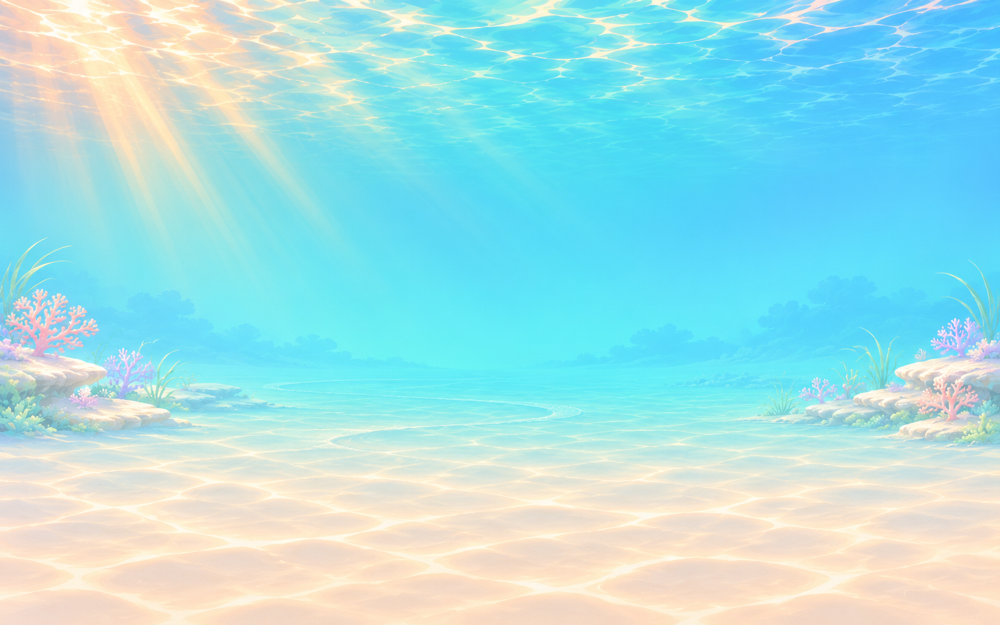

四栋独立建筑＋一张新背景。先看轮廓、配色与摆进鱼缸后的关系。

基于现行 1.2.2 的装饰几何函数。推荐构图让高建筑靠两侧，低建筑靠中间；切换可对照现行自动排布。点位与尺寸是美术建议，尚未接入游戏；鱼为既有素材。
浅底使用棋盘提示透明区；深底用于检查边缘。64／128px 是浏览器等比缩略示意，还没有导出正式缩略图文件。PNG 的非透明主体与原始画布比例各不相同。
左上暖光、奶油色沙地、两侧低珊瑚，把中央水域和地面留出来。比珊瑚晴湾更轻、更空，方便摆放暖色小建筑。
背景中没有鱼、建筑或商店物品。建筑可单独隐藏、换序，不会与背景绑定。
四张建筑均为 RGBA 真透明，其中三张做过一轮图像工具清理，放大后仍可见少量边缘杂色，最终边缘处理与规范化导出待定稿。选用 PNG 保留图像工具输出的原始像素，导入时未裁切或缩放；现有 PNG 尺寸/锚点不直接套用正式 512px 资源规范。价格、门槛、存档和商品目录本轮均未改动。